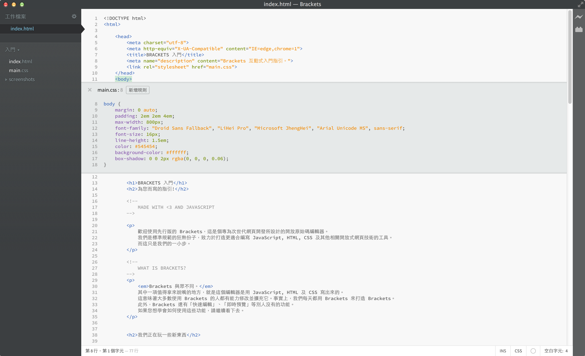

歡迎使用 Brackets，這是個很懂網頁設計的現代化開放原始碼程式編輯器。 輕巧又不失威力，整合多項視覺化的編輯功能，在需要時提供您適當的協助。
Brackets 與眾不同。 Brackets 提供「快速編輯」、「即時預覽」等別的編輯器沒有的獨家功能。 而且 Brackets 是用 JavaScript, HTML 及 CSS 寫出來的。這代表大多數使用 Brackets 的人都有能力修改及擴充它。 事實上，Brackets 本身就是我們用 Brackets 一天天打造出來的。 如果您想學會如何使用這些功能，請繼續看下去。
只要開啟包含您程式碼的資料夾，就能使用 Brackets 來編輯。 Brackets 會將目前開啟的資料夾視為一個「專案」，「程式提示」、「即時預覽」及「快速編輯」等功能都只會參考到專案裡的檔案。
要是您已經準備好關掉這個範例專案，開始編輯自已的程式，可以使用左邊側欄的下拉式選單切換資料夾。 現在應該是選到「Getting Started」，也就是您看的這份文件所在的資料夾。 按一下下拉式選單，點選「開啟資料夾…」選項，就能開啟您自已的資料夾。 之後您也可以透過同樣的下拉式選單切回開啟過的資料夾，包含這個範例專案。別再因為不斷切換檔案而一直分神失焦了。編輯 HTML 時，按下 Cmd/Ctrl + E 快速鍵就地開啟編輯器，秀出所有相關的 CSS 規則。 調好 CSS 樣式後按 ESC 馬上就能回到 HTML 繼續編輯。 此外，也可以放手讓那些 CSS 規則一直開在 HTML 編輯器裡。 只要在快速編輯器的範圍外按下 ESC 鍵，就能關掉所有快速編輯器。 快速編輯也能找到定義在 LESS 及 SCSS 檔案中的規則，就算是巢狀規則也沒問題。
想親身體驗嗎? 把游標移到上面的 標籤中，按下 Cmd/Ctrl + E。 您應該就會看到 CSS 快速編輯器出現在上方，顯示出所有套用到的 CSS 規則。 快速編輯功能也支援 class 及 id 屬性。搭配 LESS 或 SCSS 檔嘛會通喔。 您也可以透過這個方式新增規則。在上方隨便一個 標籤上點一下，按 Cmd/Ctrl + E。 可以看到它上面並沒有任何 CSS 規則，但您可以按一下「新增規則」按鈕，就會新增 規則。 您也能使用相同的快速鍵編輯其他東西，例如 JavaScript 函式、CSS 色彩、CSS 動畫計時函式等，持續增加中。
目前還不能在快速編輯器中巢狀開啟其他快速編輯器，只有游標在主編輯器時才能開快速編輯功能。
有一種舞叫做「存檔再重新載入探戈」，我們跳了好多年，您聽過嗎? 就是在編輯器裡改一改東西，儲存好，馬上再切過去瀏覽器，按「重新整理」後才能真正的看到結果，超鳥的! 用 Brackets，您永遠不必再這麼「跳」。
Brackets 會跟您本機的瀏覽器即時連線，在您修改的同時將 HTML 及 CSS 內容更新過去! 說不定活在 21 世紀的您已經用瀏覽器提供的開發者工具做過類似的事了。 但是用 Brackets，您不用再手動把總算是會動的程式複製貼回編輯器。 您的程式雖然是跑在瀏覽器上，但是所有的血與肉都還是在編輯器裡啊!
Brackets 讓您更容易看到 HTML 及 CSS 的修改會對頁面造成什麼影響。 當游標停在 CSS 規則上時，Brackets 會在瀏覽器裡將所有會受影響的元素突顯出來。 編輯 HTML 檔案時，Brackets 也會在瀏覽器中突顯對應的 HTML 元素。
如果您安裝了 Google Chrome，馬上就可以試看看。 按一下 Brackets 視窗右上角的閃電圖示，或是按 Cmd/Ctrl + Alt + P。 當即時預覽功能在 HTML 檔案上啟用後，所有連結到的 CSS 檔案也都可以馬上編輯馬上生效。 Brackets 與您的瀏覽器建立連線時，圖示會由灰轉金。 就是現在，把游標移到上面的 標籤。注意看 Chrome 在圖片上顯示的藍色框。 接下來，按 Cmd/Ctrl + E 開啟相關的 CSS 規則定義。 試著將框線 (border) 值由 10px 改成 20px，或將背景色 (background-color) 由透明 "transparent" 改成 "hotpink"。 如果您把 Brackets 跟瀏覽器並排放好，就能看到所有異動都直接反應在瀏覽器上了。酷吧?!目前 Brackets 只能即時預覽 HTML 及 CSS。不過，儲存修改過的 JavaScript 檔案時也會自動重新載入頁面。 我們正在努力讓即時預覽功能支援 JavaScript。 此外，即時預覽現在只能在 Google Chrome 上執行，我們希望將來能支援所有主流的瀏覽器。
為了那些記不得色彩十六進位值或是 RGB 值的人，Brackets 能快速又簡單的讓您看見色彩的真相。 不管在 CSS 或 HTML 中，只要將滑鼠游標移到任何色彩值或是漸變色上，Brackets 就會自動顯示預覽。 對圖片也同樣有用，在 Brackets 裡將滑鼠游標移到圖片連結上，就會自動顯示預覽縮圖。
自已試試快速檢視，只要將游標移到這份文件最上方的 標籤上，按下 Cmd/Ctrl + E 開啟 CSS 快速編輯器，將滑鼠游標移到 CSS 上的任何一個色彩值上就能看到。 想要預覽漸變色，您也可以在 標籤上開啟 CSS 快速編輯器，移到隨便一個背景圖片 (background-image) 值就能看到。 要試圖片預覽，則是將游標移到前幾段提到的畫面擷圖上就能看到。除了 Brackets 內建的這些好物外，我們那深具規模，且日益狀大的開發者社群已經寫出了數百個擴充功能。 如果您覺得 Brackets 少了什麼，說不定早就有人寫好擴充功能了。 點一下 檔案 > 擴充功能管理員...，再點一下「可使用」頁籤，就能瀏覽或搜尋擴充功能清單。 一旦找到想要的擴充功能，按一下後面的「安裝」按鈕就可以了。
Brackets 專案是開放原始碼的。世界各地的網頁開發者貢獻一己之力，只為打造出更好的程式編輯器。 也有不少人正在開發擴充功能，讓 Brackets 更強大。 告訴我們您的想法，分享您的 ieda，或是直接為本專案做點事吧。